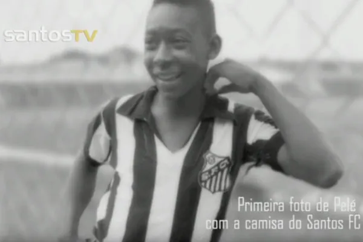
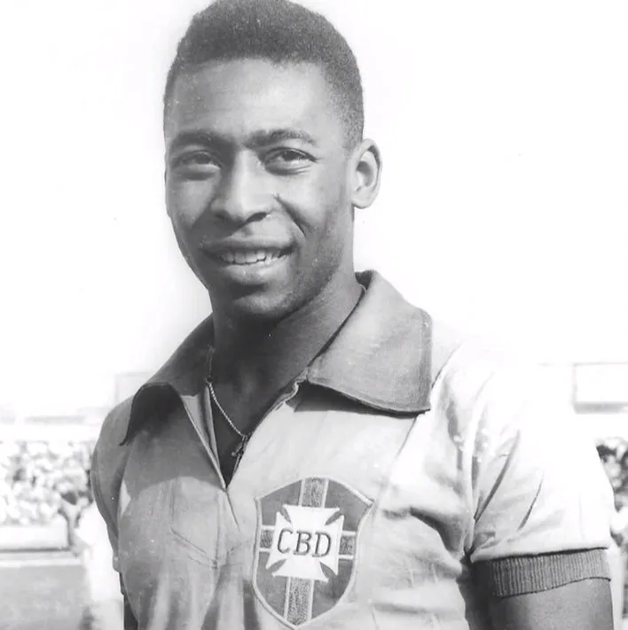
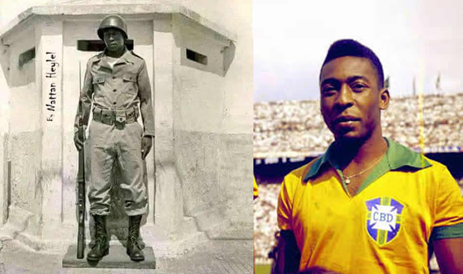

Historia do maior jogador do futebol: Pelé
Carreira do Pelé
Destaque dos jogos nas ruas de Bauru, Pelé passou por algumas equipes amadoras durante sua infância, e, aos 11 anos, o jogador Waldemar de Brito descobriu-o e convidou-o para a equipe que estava formando: o Clube Atlético de Bauru. Passados poucos anos, Waldemar percebeu o enorme talento de Pelé e decidiu levá-lo para um time maior, o Santos Futebol Clube.
Santos Futebol Clube
Veja mais sobre "Pelé" em: https://brasilescola.uol.com.br/biografia/pele.htm
"Em 1956, Pelé chegou ao Santos como promessa de Waldemar de Brito, que, de acordo com informações do site oficial do Santos, afirmou ao clube: “Esse menino vai ser o melhor jogador de futebol do mundo!”. Passado um mês de sua chegada ao clube, o jovem fez sua primeira partida na equipe profissional. O jogo foi contra o Corinthians de Santo André, e o Santos venceu por 7 a 1. Pelé entrou no segundo tempo de partida e marcou o sexto gol
Pelé começou a ser reconhecido nacionalmente ainda com 16 anos de idade. Em 1957, o garoto já era titular do Santos e foi artilheiro do Campeonato Paulista, o mais jovem até hoje, marcando 36 gols. O Rei do Futebol atuou durante quase toda sua carreira no Santos, entre 1956 a 1974. No período, ele levou o clube a conquistar dez títulos estaduais e seis campeonatos nacionais (Taça Brasil e Torneio Robertão), além de duas Copas Libertadores e dois Mundiais de Clubes, em 1962 e 1963." Veja mais sobre "Pelé" em: https://brasilescola.uol.com.br/biografia/pele.htm
Pelé na Seleção Brasileira
"Passados dez meses da contratação de Pelé pelo Santos, o garoto foi convocado pela Seleção Brasileira pela primeira vez para disputar a Copa Roca (atual Superclássico das Américas). A competição era um torneio amistoso entre a Seleção Brasileira e a Seleção Argentina.
As duas partidas foram realizadas no Brasil. A primeira marcou a estreia de Pelé com a camisa do Brasil e foi realizada no Maracanã. A Argentina venceu por 2 a 1, e o gol brasileiro foi marcado por Pelé. Na partida de volta, no Estádio do Pacaembu, o Brasil venceu por 2 a 0, com um gol de Pelé e outro de Mazzola. Foi o primeiro título de Pelé pela Seleção Brasileira." Veja mais sobre "Pelé" em: https://brasilescola.uol.com.br/biografia/pele.htm
"Pelé é, até hoje, o jogador mais novo a vencer uma Copa do Mundo de Futebol. Com apenas 17 anos e 8 meses, Pelé foi campeão do mundo em 1958, na Suécia. O então garoto fez seis gols em sua primeira Copa do Mundo e foi o artilheiro do Brasil. Nessa edição, Pelé foi chamado pelos franceses de Rei do Futebol.
O primeiro gol de Pelé em uma Copa do Mundo foi contra o País de Gales, nas quartas de final do Mundial de 1958. O feito concede a Pelé o recorde de jogador mais novo a fazer um gol em uma Copa do Mundo.
Na Copa da Suécia, os dirigentes brasileiros esqueceram de enviar a numeração dos jogadores para a FIFA, e a entidade precisou defini-la. Pelé era reserva e recebeu a camisa 10, número que ficou eternizado em suas costas. Por causa de Pelé, os jogadores mais habilidosos passaram a usar a camisa 10."
Veja mais sobre "Pelé" em: https://brasilescola.uol.com.br/biografia/pele.htm
Morte de Pelé

"O Rei Pelé faleceu no dia 29 de dezembro de 2022, aos 82 anos, por falência múltipla de órgãos. O ex-jogador estava internado há semanas no Hospital Israelita Albert Einstein para tratar da progressão de um câncer de cólon. Em 2021 o atleta já havia passado por uma cirurgia e sessões de quimioterapia para tratar da doença, no entanto foram detectadas metástases no intestino, pulmão e fígado, e a doença passou a não responder ao tratamento."
Veja mais sobre "Pelé" em: https://brasilescola.uol.com.br/biografia/pele.htm
"Com a notícia da morte do maior jogador de futebol de todos os tempos, homenagens foram feitas em todo o mundo. Em novembro, durante a realização da Copa do Mundo de Futebol no Catar, Pelé já estava hospitalizado e recebeu diversas homenagens em jogos da Seleção Brasileira.
Apesar da morte do Rei Pelé ter sido em 2022, a despedida só começou a ser realizada no ano seguinte. A pedidos da família, a cerimônia de velório ocorreu somente nos dias 2 e 3 de janeiro de 2023, no estádio da Vila Belmiro, que pertence ao Santos, clube em que Pelé começou sua história. O adiamento no velório do Rei se deu para não coincidir com a cerimônia de coroação do novo presidente da República, Luiz Inácio Lula da Silva, eleito em 2022, e que tomou posse para seu terceiro mandato em 1º de janeiro de 2023."
Veja mais sobre "Pelé" em: https://brasilescola.uol.com.br/biografia/pele.htm
Curiosidades
Formação
"Pelé é formado em Educação Física pela Universidade Metropolitana de Santos (UNMES). Ele ingressou na universidade em 1970, quando já era considerado o melhor jogador do mundo. O curso foi o primeiro da área com licenciatura no Brasil." Veja mais sobre "Pelé" em: https://brasilescola.uol.com.br/biografia/pele.htm
Seviço Militar
"Já reconhecido mundialmente, campeão do mundo com a Seleção Brasileira de 1958, Pelé dividiu seu tempo entre o futebol e o serviço militar. Aos 18 anos, alistou-se e serviu o Exército Brasileiro no 6º Grupo de Artilharia de Costa Motorizado, em Praia Grande/SP, e passou a ser chamado de Soldado 201 Nascimento." Veja mais sobre "Pelé" em: https://brasilescola.uol.com.br/biografia/pele.htm
"Durante o período, Pelé foi o camisa 10 da Seleção das Forças Armadas e chegou a enfrentar a Seleção Brasileira Olímpica, que se preparava para as Olimpíadas de Roma, em 1960. A partida em que Pelé atuou aconteceu no Estádio das Laranjeiras, no Rio de Janeiro, e a equipe do Exército venceu por 2 a 1, mas Pelé não marcou gol nesse dia. " Veja mais sobre "Pelé" em: https://brasilescola.uol.com.br/biografia/pele.htm